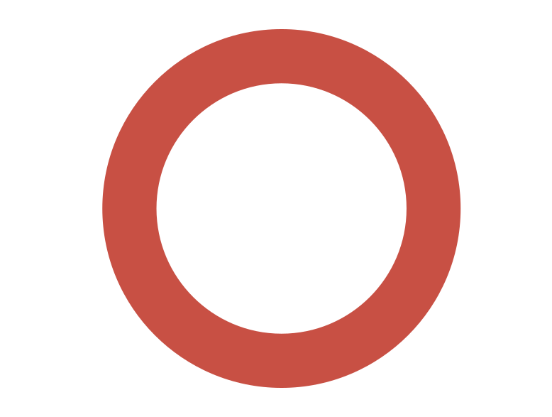
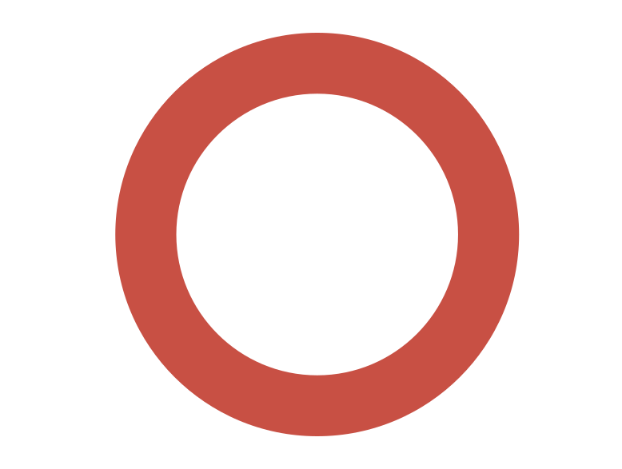
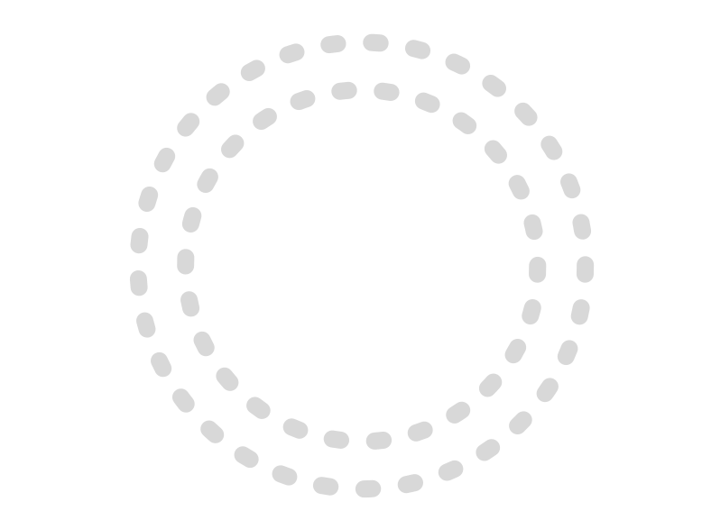

CURSO
BOAS
PRÁTICAS
CLÍNICAS
PARTICIPANTES DE PESQUISA
Boas-vindas
Seja bem-vindo(a) ao módulo 6 do curso Boas Práticas Clínicas:
Participantes de Pesquisa.
Nele, você refletirá sobre o papel dos participantes de uma pesquisa e aprenderá os principais passos sobre como desenvolver a sua habilidade na elaboração do TCLE/TALE.
Bom proveito!
Siga para a próxima tela.

Módulo 6 - Boas Práticas Clínicas
Participantes de pesquisa
1/19
Introdução
Você acha possível realizar um estudo clínico sem os participantes da pesquisa?
Selecione uma resposta.
Resposta correta
Parabéns, você acertou!
Resposta incorreta
Tente novamente!
Módulo 6 - Boas Práticas Clínicas
Participantes de pesquisa
2/19
Introdução
Os participantes são atores-chave em qualquer pesquisa investigativa e precisamos do consentimento de todos os indivíduos para isso.
A primeira referência à necessidade do consentimento surge a partir de um código, siga e descubra mais.
É mesmo importante pensar o quanto a pesquisa clínica busca contribuir para o avanço científico e tecnológico nas áreas da saúde, e deve trazer benefícios diretos para os envolvidos ou de forma indireta para a sociedade!
Módulo 6 - Boas Práticas Clínicas
Participantes de pesquisa
3/19
Garantias e direitos dos participantes de pesquisa
Desde o Código de Nuremberg que estabeleceu como essencial e obrigatório o consentimento voluntário do ser humano, observa-se em todos os documentos que guiam a condução da pesquisa, um crescente de recomendações voltadas para a garantia que o indivíduo não seja um objeto em estudo.
Siga para a próxima tela para conhecer estes direitos.
Módulo 6 - Boas Práticas Clínicas
Participantes de pesquisa
4/19
Garantias e direitos dos participantes de pesquisa
Agora, arraste todos os direitos dos participantes na caixa ao lado.
1
Receber as informações do estudo de forma claras
2
Ter oportunidade de esclarecer dúvidas
3
Ter o tempo que for necessário para a tomada de uma decisão autônoma
4
Ter liberdade de recusa em participar do estudo
5
Ter liberdade de retirar o seu consentimento a qualquer fase da pesquisa
6
Ter liberdade de retirar o consentimento de uso e guarda do material biológico
7
Receber assistência (integral e imediata) por danos, de forma gratuita
8
Requerer indenização por danos
9
Receber ressarcimento de gastos (incluindo os de acompanhantes)
10
Ter acesso aos resultados dos exames realizados durante o estudo
11
Solicitar retirada dos seus dados genéticos de bancos onde estejam armazenados
12
Ter acesso gratuito ao produto investigacional (quando for o caso) após o término de sua participação no estudo
13
Ter acesso gratuito ao método contraceptivo escolhido (quando for o caso)
14
Receber aconselhamento genético gratuito (quando for o caso)
15
Ter assegurada a confidencialidade dos seus dados
16
Ter assegurada sua privacidade
17
Receber uma via do TCLE (assinada e rubricada pelo participante da pesquisa e pelo pesquisador)
18
Receber informações de contato do pesquisador e do Sistema CEP/CONEP
Durante o processo de consentimento, e a qualquer momento, o participante deve poder esclarecer quaisquer dúvidas relativas ao estudo e ao seu tratamento.
O consentimento é suscitado pelo diálogo e não pode ser visto como uma obrigação contratual.
A participação é voluntária, motivo pelo qual o consentimento é um convite, passível de rejeição.
O processo de consentimento deve ser feito respeitando as condições individuais de cada participante.
O TCLE deve informar que a autorização para guarda e utilização do material biológico armazenado em biobanco ou biorrepositório é passível de retirada.
O TCLE deve assegurar, de modo afirmativo e sem condicionais, que o participante receberá a assistência integral e imediata, gratuitamente e pelo tempo necessário.
O TCLE deve assegurar, de maneira inequívoca, que, ao final da participação no estudo, os indivíduos continuarão recebendo o produto investigacional gratuitamente em caso de benefício individual, definido pelas condições assistenciais do participante. E, ainda, garantir que o patrocinador fornecerá, gratuitamente, a medicação a todos os participantes da pesquisa (grupo experimental e controle), caso se observe benefício coletivo.
O TCLE deve assegurar, de modo evidente, o direito do participante à indenização em caso de danos decorrentes da pesquisa.
A linguagem utilizada tanto na redação do TCLE quanto no processo de consentimento deve ser adequada a população do estudo.
Cabe ao pesquisador disponibilizar aos participantes os resultados de exames que forem realizados na condução da pesquisa.
É fundamental inserir no TCLE o telefone de contato com o pesquisador, assim como uma breve descrição do papel do CEP e o telefone de contato, incluindo o da CONEP (quando aplicável). Em ensaios clínicos envolvendo questões de segurança, ainda é essencial um telefone de contato 24 horas com a equipe de pesquisa.
O TCLE deve informar que é passível de retirada os dados genéticos e que esta decisão não acarretará penalização por parte dos pesquisadores.
O TCLE deve garantir, de forma explícita, que a escolha do método contraceptivo é uma decisão conjunta do médico e do (a) participante, sendo ainda assegurado a liberdade de declaração de isenção de risco de gravidez na pesquisa e que no caso de uso, o fornecimento se dará de forma gratuita, e pelo tempo que for necessário.
Cabe ao pesquisador disponibilizar os resultados dos exames genéticos, caso o participante queira, assegurando a confidencialidade dos resultados, e oferecer aconselhamento genético gratuito.
O pesquisador é responsável por garantir a confidencialidade dos dados da pesquisa, por meio de uma gestão adequada dos mesmos, que não permita acesso a pessoas não designadas.
A privacidade é um direito assegurado pelo artigo 5º da Constituição Federal (1988). Para preservar a identidade dos participantes, devem ser utilizadas estratégias de codificação, sendo que os dados só podem ser repassados ao patrocinador ou a terceiros de modo em que não se possa identificar diretamente o participante.
O TCLE deve assegurar, explicitamente, que haverá ressarcimento de todas as expensas que o participante e seu(s) acompanhante(s) terão ao participar da pesquisa.
O consentimento é um ato recíproco, sendo assinado e datado pelas pessoas envolvidas em via original. Não é adequado usar o termo cópia.
Resposta incorreta
Tente novamente!
Resposta correta
Parabéns, você acertou!
Módulo 6 - Boas Práticas Clínicas
Participantes de pesquisa
5/19
Consentimento informado
“A obtenção de consentimento livre e esclarecido é um dever moral do pesquisador, e a manifestação do respeito às pessoas envolvidas no projeto” (Joaquim Clotet)
Entenda mais no Quadro abaixo:
O consentimento informado é uma etapa fundamental na pesquisa. O Termo de Consentimento Livre e Esclarecido (TCLE) é a única parte do projeto que é compartilhada entre pesquisador, CEP e participante de pesquisa. Para o participante, é o objeto de consulta que ele pode utilizar para tirar dúvidas ou relembrar partes da pesquisa. O processo de consentimento livre e esclarecido objetiva uma decisão autônoma da pessoa que está sendo convidada a participar de um projeto de pesquisa após esclarecimentos sobre os procedimentos, riscos, incômodos, benefícios e direitos envolvidos.
Siga em frente para entender como funciona esse processo.
Módulo 6 - Boas Práticas Clínicas
Participantes de pesquisa
6/19
Processo de Consentimento informado
A Res. CNS 466/12 aborda o consentimento como um processo, diferentemente da abordagem feita pela Res. CNS 196/96, que era restrita ao TCLE. Ela define o Processo de Consentimento Livre e Esclarecido englobando duas etapas a serem necessariamente observadas para que o convidado a participar de uma pesquisa possa se manifestar, de forma autônoma, consciente, livre e esclarecida. Essas duas etapas são:
Clique nas caixas para conhecer.
Você acha que recrutar participantes na sala de espera é adequado?
Vamos descobrir nas próximas telas.
Módulo 6 - Boas Práticas Clínicas
Participantes de pesquisa
7/19
Termo de Consentimento Livre e Esclarecido
Após a etapa inicial do consentimento vamos aprender sobre o documento TCLE. A Res. CNS 466/12 define o TCLE como o documento no qual é explicitado o consentimento livre e esclarecido do participante e/ou de seu responsável legal, de forma escrita, devendo conter todas as informações necessárias, em linguagem clara e objetiva, de fácil entendimento, para o mais completo esclarecimento sobre a pesquisa a qual ele se propõe participar. Agora, veja com atenção essas dicas:
O TCLE sempre é assinado antes de qualquer procedimento do estudo.
O TCLE sempre é assinado em duas vias, uma para o pesquisador e outra para o participante.
Siga para a próxima página
Módulo 6 - Boas Práticas Clínicas
Participantes de pesquisa
8/19
Confira aqui alguns dos itens obrigatórios do TCLE:
- justificativa, objetivos e procedimentos que serão utilizados na pesquisa;
- explicitação dos possíveis desconfortos e riscos decorrentes da participação na pesquisa;
- esclarecimento sobre a forma de acompanhamento e assistência a que terão direito os participantes da pesquisa;
- garantia de plena liberdade ao participante da pesquisa, de recusar-se a participar ou retirar seu consentimento;
- garantia de manutenção do sigilo e da privacidade dos participantes;
- garantia de que o participante da pesquisa receberá uma via do TCLE;
- garantia de ressarcimento das eventuais despesas relacionadas a sua participação na pesquisa (ex.: transporte, alimentação, etc.);
Siga para saber mais.
Módulo 6 - Boas Práticas Clínicas
Participantes de pesquisa
9/19
Ainda segundo a Resolução CNS 466/12, nos casos de pesquisas que utilizam metodologias experimentais:
- explicitar, quando pertinente, os métodos terapêuticos alternativos existentes;
- esclarecer, quando pertinente, sobre a possibilidade de inclusão do participante em grupo controle ou placebo, explicitando, claramente, o significado dessa possibilidade, e;
- não exigir do participante da pesquisa, sob qualquer argumento, renúncia ao direito à indenização por dano.
Saiba mais:
Módulo 6 - Boas Práticas Clínicas
Participantes de pesquisa
10/19
Casos envolvendo participantes indígenas
A Res. CNS 304/00 recomenda que sejam respeitados a visão de mundo, os costumes, as atitudes estéticas, as crenças religiosas, a organização social, as filosofias peculiares, as diferenças linguísticas e a estrutura política; e que não sejam realizadas pesquisas em comunidades de índios isolados. Casos especiais devem apresentar justificativas detalhadas ao CEP/CONEP.
Siga para a próxima tela.
Módulo 6 - Boas Práticas Clínicas
Participantes de pesquisa
11/19
Termo de Assentimento Livre e Esclarecido
A Resolução CNS 466/12 define o Termo de Assentimento como o documento elaborado em linguagem acessível para os menores ou para os legalmente incapazes, por meio do qual, após os participantes da pesquisa serem devidamente esclarecidos, explicitarão sua anuência em participar da pesquisa, sem prejuízo do consentimento de seus responsáveis legais (RL).
Recomenda-se que em pesquisas cujos envolvidos sejam crianças, adolescentes, pessoas com transtorno ou doença mental deverão ser cumpridas as etapas do esclarecimento e do consentimento livre e esclarecido, por meio dos seus representantes legais dos envolvidos a participar da pesquisa, preservado o direito de informação destes, no limite de sua capacidade.
Não existe um consenso sobre a partir de qual idade é necessário o uso do TALE, porém, a maioria atribui seu uso a menores de idade a partir dos 6 anos, sendo que podem ser feitos tipos diferentes de TALE respeitando o público alvo, por exemplo, uso de gibis para crianças pequenas ou desenhos para crianças não alfabetizadas. O importante é que a linguagem seja apropriada à idade.
Quando a pessoa atingir a maior idade durante o período da pesquisa, ela deverá assinar, após esta data, o TCLE.
Módulo 6 - Boas Práticas Clínicas
Participantes de pesquisa
12/19
Vamos entender alguns conceitos importantes clicando nos espaços abaixo
Esses são os conceitos importantes que são embasados no Código Civil Brasileiro e no Manual de Boas Práticas Clínicas (GCP/ICH).
Siga para a próxima tela.
Módulo 6 - Boas Práticas Clínicas
Participantes de pesquisa
13/19
Um dos requisitos de Boas Práticas Clínicas é a obtenção adequada do TCLE/TALE. Para fins de monitoria/auditoria os pontos cruciais a serem verificados são:
- Se foi realizado por pessoas devidamente treinadas e que estejam delegadas para esta função;
- Se o processo de consentimento ocorreu antes de qualquer procedimento do estudo;
- Se o documento utilizado no processo de consentimento corresponde à última versão do TCLE/TALE aprovado pelo CEP;
- Se a impressão dos documentos a serem empregados no processo de consentimento está completa e legível;
- Após a assinatura do documento, deve-se checar se todas as páginas foram rubricadas e se a última página foi assinada e datada por todos os envolvidos no processo (pesquisador, participante, responsável legal e/ou testemunhas (quando aplicável));
- Se há um registro adequado do processo de consentimento;
- Se houve uma verificação de um documento de identificação com foto do participante, RL, testemunha.
Observação: Os documentos devem ficar guardados em local apropriado, de acesso restrito (com uso de fechadura) e protegido.
Módulo 6 - Boas Práticas Clínicas
Participantes de pesquisa
14/19
Conclusão
Neste módulo, você aprendeu o papel dos participantes de pesquisa e os principais passos para desenvolver a sua habilidade na elaboração do TCLE/TALE.
Agora, faça os exercícios de fixação para apoiar seu aprendizado!
Siga para a próxima tela.
Módulo 6 - Boas Práticas Clínicas
Participantes de pesquisa
15/19
Questão 1:
Você tem um conhecido que está com catarata e que no momento não está conseguindo ler. Ele o chama para acompanhá-lo em uma consulta no centro de pesquisa pois a equipe informou que iriam convidá-lo para uma nova modalidade de cirurgia, parte de uma pesquisa e que precisaria de um acompanhante. Como você acabou de ler todo o conteúdo deste módulo, pode tranquilizar o seu amigo e explicar que a equipe exporia as questões da pesquisa por meio de um instrumento chamado ( ______________________________) e que você seria uma (______________________________).
Dentre o quadro de palavras abaixo arraste as duas que se encaixam nas lacunas.
Termo de Assentimento Livre e Esclarecido
Termo de Consentimento Livre e Esclarecido
Contrato de pesquisa
Testemunha ocular
Testemunha Imparcial
Testemunha Parcial
Resposta incorreta
Tente novamente!
Resposta correta
Parabéns, você acertou!
Módulo 6 - Boas Práticas Clínicas
Participantes de pesquisa
16/19
Questão 2:
Marque a alternativa correta.
Você foi com o seu conhecido na consulta. Após todas as explicações fornecidas sobre a pesquisa, ele aceitou o convite à participação e perguntou a equipe se ele poderia em algum momento desistir da mesma. A equipe respondeu que:
Esta pergunta remete aos direitos do participante de pesquisa. Aproveite e faça uma revisão.
Resposta correta
Parabéns, você acertou!
Resposta incorreta
Tente novamente!

Módulo 6 - Boas Práticas Clínicas
Participantes de pesquisa
17/19
Questão 3:
Marque a alternativa correta.
Após um período o seu conhecido lhe comunicou que devido ao aumento da passagem do metrô, ele estava com dificuldade de ir ao centro de pesquisa. Você orientou que ele comunicasse o fato a equipe do estudo e o orientou a pedir o ressarcimento dos gastos para ir as consultas da pesquisa. Cabe a equipe ressarcir os gastos?
Esta pergunta remete aos direitos do participante de pesquisa. Aproveite e faça uma revisão.
Resposta correta
Parabéns, você acertou!
Resposta incorreta
Tente novamente!
Módulo 6 - Boas Práticas Clínicas
Participantes de pesquisa
18/19
Chegamos ao final
desse módulo!
Módulo 6 - Boas Práticas Clínicas
Participantes de pesquisa
19/19